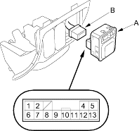
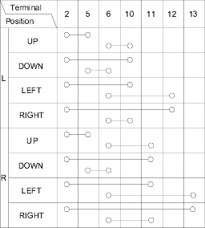
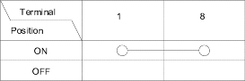
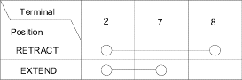

- 4-door: Remove the driver's pocket (see page 20-76), then remove the power. Carefully pry the power mirror switch out (A).
5-door: Carefully pry the power mirror switch out (A).

- Disconnect the 13P connector (B) from the switch.
- Check for continuity between the terminals in each switch position according to the table.
Mirror Switch:

Defogger Switch:

Retract switch:
